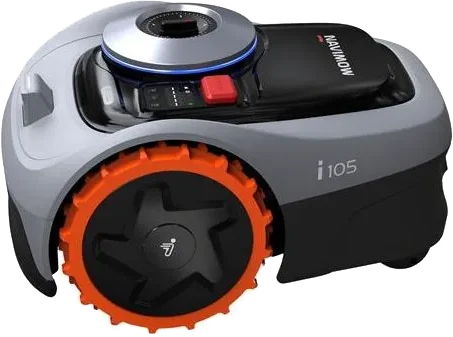

Segway Navimow i105E
8,1/10
849 €
Aucun câble à enterrer, 500 m² tondus en une charge.
- 500 m²
- pente 30 %
- sans câble
prix du 15/11 à 7 h · Lire l’avis
Maquette V2 · prix, notes et dates d’exemple · storyboard
55 robots notés · prix relevés le 15/11 à 7 h

Tous les robots tondeuses notés avec le même barème. Leur prix est relevé chaque matin chez Cdiscount et Fnac.
Résultat en 2 minutes, sans inscription · Je ne connais pas ma surface

8,1/10
849 €
Aucun câble à enterrer, 500 m² tondus en une charge.
prix du 15/11 à 7 h · Lire l’avis

7,4/10
399 €
Le moins cher du classement, avec un câble à poser.
prix du 15/11 à 7 h · Lire l’avis

8,0/10
1 049 €
Carte du jardin en 20 minutes, sans antenne à planter.
prix du 15/11 à 7 h · Lire l’avis

7,9/10
799 €
Annonce 50 % de pente pour moins de 800 €.
prix du 15/11 à 7 h · Lire l’avis
Personne ne peut essayer 55 robots sur le même terrain. Nous lisons les fiches des fabricants, les notices et les retours publiés, puis nous appliquons le même barème à tous.

Nettoyer le robot, le charger, le stocker hors gel. Le détail est dans le calendrier.
Ouvrir le calendrier du gazon